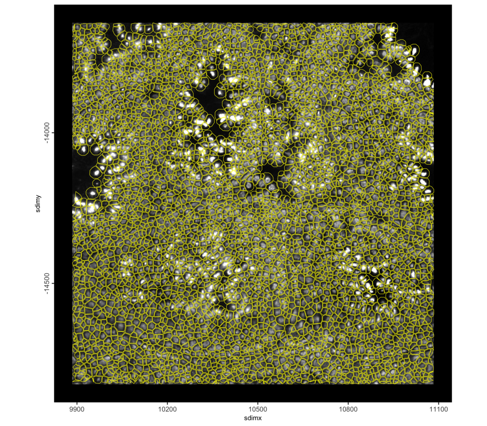
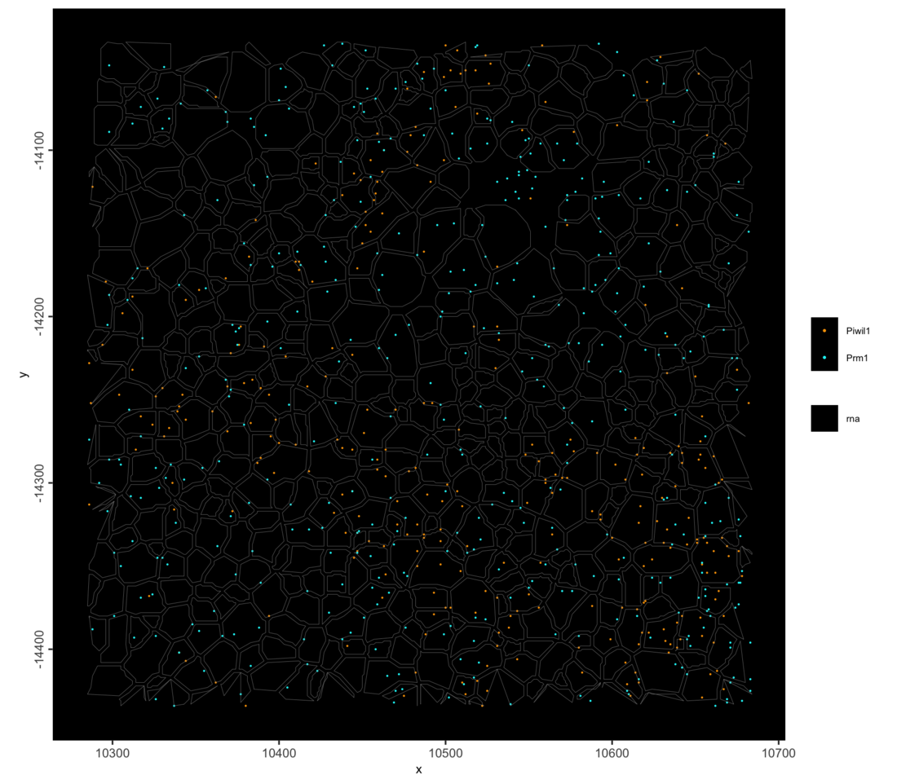
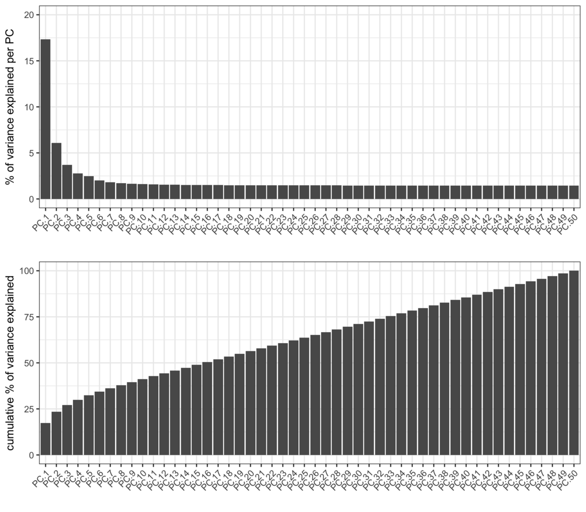
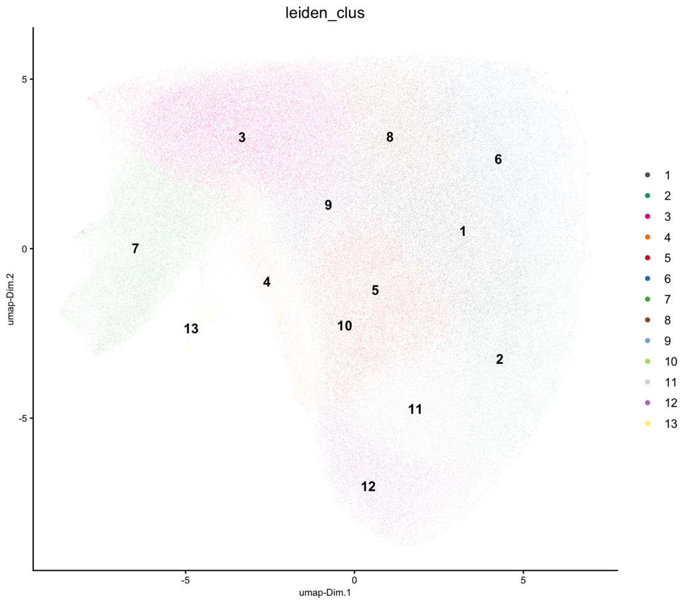
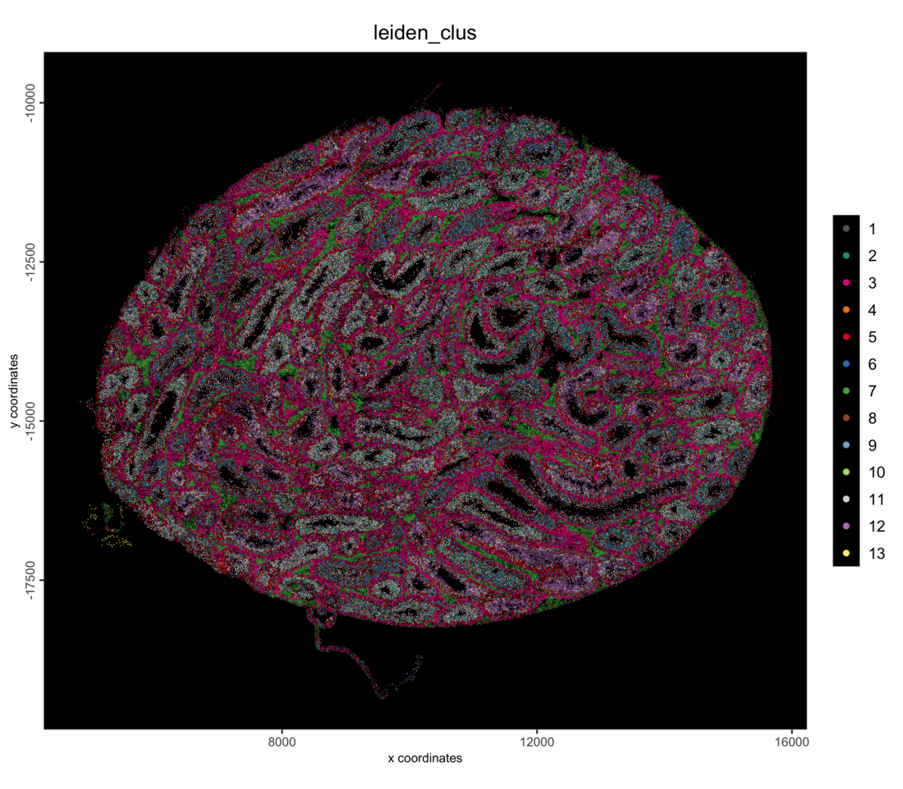
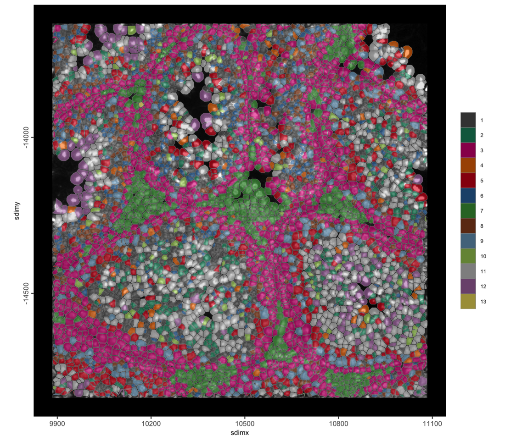
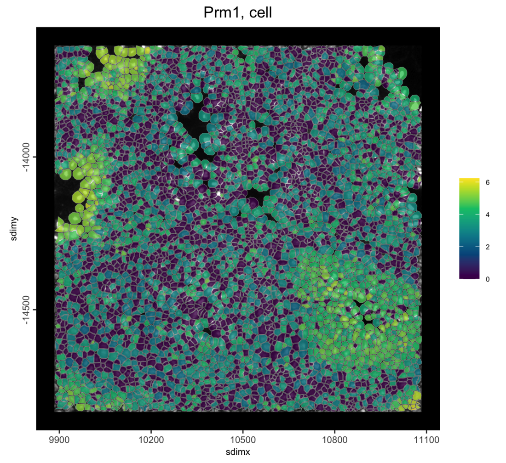
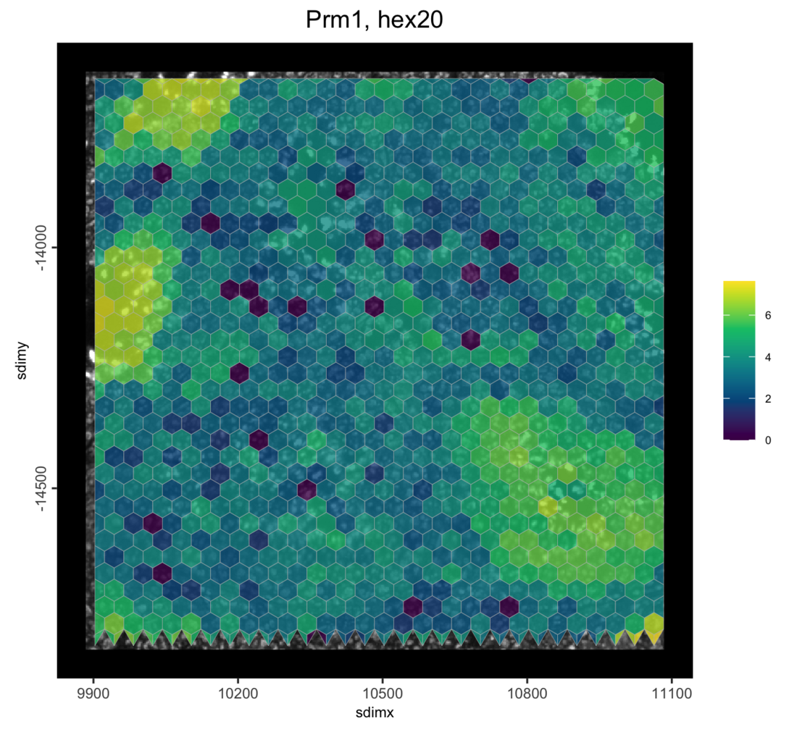
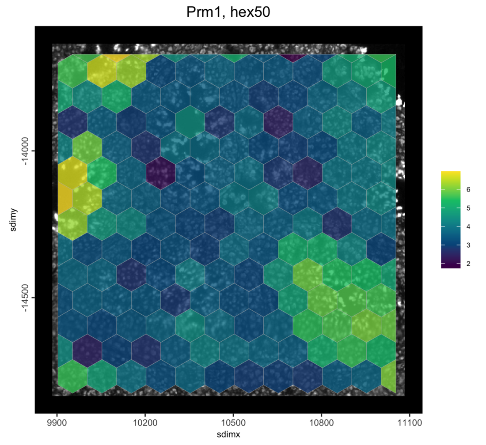

Stereo-seq Mouse Testis: 0.5 µm Bins into Your Own Polygons
Source:vignettes/stereoseq_testis_own_polygons_giottodisk.Rmd
stereoseq_testis_own_polygons_giottodisk.Rmd1 Overview
Stereo-seq captures transcripts on spots 0.5 µm apart. This tutorial
reads those single spots (bin1) into an on-disk GiottoDisk
project and sums them into polygons of your choice: here the cell
outlines from SAW’s segmentation, and then hexagon grids of two sizes.
The same spots can be summed into any other set of polygons without
reading the data again.
On a disk-backed object the spots, the polygons and the expression matrices live as parquet files in a project directory, so the same Giotto commands run on data larger than memory. Two related tutorials start from the segmented cells and from the 10 µm bins.
2 Install extra packages
This tutorial uses GiottoDisk for on-disk processing. These are preview dev builds off the dev and gsource Giotto package branches. If GiottoDisk has not been installed yet, use the following:
# GiottoDisk install
GiottoUtils::suite_install("GiottoDisk")
# Optional for matrix maths speedup:
install.packages("GiottoKernels",
repos = c("https://giotto-suite.r-universe.dev", "https://cloud.r-project.org")
)3 Dataset explanation
STOmics’ mouse
testis demo dataset (chip B04652F6): a fresh frozen section of mouse
testis on the Stereo-seq Transcriptomics T FF V1.3 kit, stained with
DAPI and processed with SAW. The tissue GEF holds the counts of every
spot under the tissue (bin1), about 109 million spot and
gene pairs here, and the same counts summed into larger bins. The
adjusted cellbin GEF holds SAW’s cell outlines.
3.1 Download links
curl links from STOmics
base=https://demo.stomicsdb.tech/B04652F6_Mouse_Testis_Stereo-seq_FF_V1.3_mIF/outs
mkdir B04652F6 && cd B04652F6
curl -O ${base}/B04652F6.tissue.gef # 7.8 GB
curl -O ${base}/B04652F6.adjusted.cellbin.gef # 1.2 GB
curl -O ${base}/B04652F6_DAPI_regist.tif # 140 MBThe Giotto Stereo-seq readers take this folder as downloaded, with
the files side by side, as well as a SAW outs/ directory
with feature_expression/ and image/
subdirectories.
4 Setup
library(arrow) # this must be libraried before terra or GiottoClass
library(Giotto)
library(GiottoDisk)
data_dir <- "path/to/B04652F6"
project_dir <- "path/to/stereoseq_testis_polygons_project"
# parallel workers for writing the spots; each holds about as much memory as
# this R session, so use fewer on a laptop
future::plan(future::multisession, workers = 2)
# GiottoDisk sizes its working memory to a fraction of the free RAM (0.25 by
# default). Lower it on a busy machine; raise it on a dedicated one.
options(giottodisk.chunk_ram_frac = 0.25)5 Read the 0.5 µm spots
sourceCreate() sets up a gDirSource: a
managed project directory that holds the object on disk.
setArtifactDumpDir() points the expression and spatial
writes at it.
# declare a Giotto directory backend to use
gdsrc <- GiottoDisk::sourceCreate(project_dir, type = "gDirSource")
# point data content writes to the backend's artifact subdirectory
GiottoDisk::setArtifactDumpDir(gdsrc)createGiottoStereoSeqObjectBin() with
bin_size = "bin1" and load_binpoints = TRUE
reads the spots as points: one point per spot with counts, kept on disk
together with the spots’ gene counts. No bin1 spatial unit
is created, because the spots are summed into the polygons below. The
registered DAPI image is read too.
g <- createGiottoStereoSeqObjectBin(data_dir,
bin_size = "bin1",
load_binpoints = TRUE, # the spots as points
load_expression = FALSE,
load_spatlocs = FALSE,
load_mask = FALSE,
backend = gdsrc # creates the object as a backed project
)
gAn object of class giotto
>Active feat_type: rna
dimensions : 27487, NA (features, cells)
[SUBCELLULAR INFO]
features : rna
[AGGREGATE INFO]
attached images ------------------
images : image
Use objHistory() to see steps and params usedThe spots are written, so the workers can go: the steps below run in this session, and stopping the workers frees their memory.
future::plan(future::sequential)6 Add your polygons
Any giottoPolygon works here: polygons read with
terra::vect() from a GeoJSON, shapefile or GeoPackage and
passed to createGiottoPolygon(), or polygons from a
segmentation mask with createGiottoPolygonsFromMask(). They
must use the same coordinates as the spots: one unit per spot, with y
counting down from the top of the chip, flipped to negative as the
Giotto Stereo-seq readers do.
Here the polygons are SAW’s cell outlines. The Stereo-seq reader for cells builds them from the cellbin GEF, already in the spots’ coordinates:
cells <- importStereoSeq(data_dir,
type = "cell",
gef_type = "adjusted_cellbin"
)$load_polygons()
# the polygon centroids become the spatial locations of the new unit
g <- setGiotto(g, cells, centroids_to_spatlocs = TRUE, verbose = FALSE)
cat(format(length(spatIDs(cells)), big.mark = ","), "polygons\n")198,248 polygonsThe polygons over the DAPI image, zoomed in:
sl <- getSpatialLocations(g, spat_unit = "cell", output = "data.table")
roi_x <- stats::median(sl$sdimx)
roi_y <- stats::median(sl$sdimy)
half <- 600 # spots; 0.6 mm across at 0.5 um per spot
spatInSituPlotPoints(g,
show_image = TRUE,
feats = NULL,
show_polygon = TRUE,
polygon_feat_type = "cell",
polygon_color = "yellow",
polygon_alpha = 0,
polygon_line_size = 0.2,
xlim = c(roi_x - half, roi_x + half),
ylim = c(roi_y - half, roi_y + half)
)
The spots of two marker genes in part of the same region: Piwil1 marks spermatocytes, Prm1 elongating spermatids.
spatInSituPlotPoints(g,
feats = list(rna = c("Piwil1", "Prm1")),
feats_color_code = c(Piwil1 = "orange", Prm1 = "cyan"),
use_overlap = FALSE,
point_size = 0.3,
show_polygon = TRUE,
polygon_feat_type = "cell",
polygon_color = "grey60",
polygon_alpha = 0,
polygon_line_size = 0.1,
xlim = c(roi_x - half / 3, roi_x + half / 3),
ylim = c(roi_y - half / 3, roi_y + half / 3)
)
7 Aggregate
calculateOverlap() finds the polygon each spot falls in,
and overlapToMatrix() sums the spots’ counts per polygon
into a new expression matrix for the cell unit.
g <- calculateOverlap(g, spat_info = "cell", feat_info = "rna")
g <- overlapToMatrix(g, poly_info = "cell", feat_info = "rna", name = "raw")
gAn object of class giotto
>Active spat_unit: cell
>Active feat_type: rna
dimensions : 27487, 198248 (features, cells)
[SUBCELLULAR INFO]
polygons : cell
features : rna
[AGGREGATE INFO]
expression -----------------------
[cell][rna] raw
spatial locations ----------------
[cell] raw
attached images ------------------
images : image
Use objHistory() to see steps and params used
# The return value is needed since saveGiotto makes changes during the write
g <- saveGiotto(g, name = "aggregated") backend : `gDirSource`
path : path/to/stereoseq_testis_polygons_project8 Quality control and filtering
g <- addStatistics(g, spat_unit = "cell", expression_values = "raw")
cx <- pDataDT(g, spat_unit = "cell")
cat(sprintf("%s cells | median %d counts, %d features per cell\n",
format(nrow(cx), big.mark = ","),
median(cx$total_expr), median(cx$nr_feats))
)198,248 cells | median 391 counts, 334 features per cellBecause the polygons here are SAW’s, the per-cell totals can be compared with SAW’s own cell counts in the cellbin GEF:
saw <- data.table::as.data.table(rhdf5::h5read(
file.path(data_dir, "B04652F6.adjusted.cellbin.gef"), "cellBin/cell"
))
saw_total <- stats::setNames(saw$expCount, paste0("cell_", saw$id))[cx$cell_ID]
cat(sprintf("%s of %s cells match SAW's total; all counts: %s here, %s in SAW\n",
format(sum(cx$total_expr == saw_total), big.mark = ","),
format(nrow(cx), big.mark = ","),
format(sum(cx$total_expr), big.mark = ","),
format(sum(saw_total), big.mark = ",")))19,348 of 198,248 cells match SAW's total; all counts: 88,587,664 here, 92,639,377 in SAWThe totals agree closely, but most cells get a few percent fewer counts here (about 4% for the median cell). The GEF stores each outline with at most 32 points, a simplified version of the masks SAW assigned the spots with, so some spots at the cell edges fall just outside the polygons.
g <- filterGiotto(g,
spat_unit = "cell",
expression_threshold = 1,
feat_det_in_min_cells = 10,
min_det_feats_per_cell = 50,
verbose = FALSE
)
cat(sprintf("%s cells x %s features retained\n",
format(length(spatIDs(g, spat_unit = "cell")), big.mark = ","),
format(nrow(fDataDT(g, spat_unit = "cell")), big.mark = ","))
)197,253 cells x 23,167 features retained9 Normalize, reduce and cluster
g <- normalizeGiotto(g,
spat_unit = "cell",
scalefactor = 1e4,
logbase = exp(1),
log_offset = 1,
scale_feats = FALSE,
scale_cells = FALSE,
verbose = FALSE
)
g <- calculateHVF(g,
spat_unit = "cell",
method = "var_p_resid",
n_top_feats = 2000,
verbose = FALSE
)
g <- runPCA(g,
spat_unit = "cell",
feats_to_use = "hvf",
ncp = 50,
scale_unit = TRUE,
center = TRUE,
verbose = FALSE
)
screePlot(g, spat_unit = "cell", ncp = 50)
The kNN network is built first. runUMAP() then reuses it
instead of searching for neighbors again, and Leiden clusters on the
same network.
dims_to_use <- 1:10
g <- createNearestNetwork(g,
spat_unit = "cell",
type = "kNN",
dimensions_to_use = dims_to_use,
k = 30,
engine = "hnsw",
verbose = FALSE
)
g <- runUMAP(g,
spat_unit = "cell",
dimensions_to_use = dims_to_use,
n_neighbors = 30,
min_dist = 0.3,
verbose = FALSE
)
g <- doLeidenCluster(g,
spat_unit = "cell",
nn_network_to_use = "kNN",
network_name = "kNN.pca",
resolution = 0.6,
n_iterations = 20,
objective_function = "modularity",
verbose = FALSE
)
clusters <- sort(unique(pDataDT(g, spat_unit = "cell")$leiden_clus))
cat(length(clusters), "clusters\n")
# one color per cluster, shared by the plots below
clus_colors <- stats::setNames(getDistinctColors(length(clusters)), clusters)
g <- saveGiotto(g, name = "clustered")13 clusters
backend : `gDirSource`
path : path/to/stereoseq_testis_polygons_project
plotUMAP(g,
spat_unit = "cell",
cell_color = "leiden_clus",
color_as_factor = TRUE,
cell_color_code = clus_colors,
point_border_stroke = 0,
point_size = 0.1
)
spatPlot2D(g,
spat_unit = "cell",
cell_color = "leiden_clus",
color_as_factor = TRUE,
cell_color_code = clus_colors,
point_border_stroke = 0,
point_size = 0.3,
background_color = "black"
)
spatInSituPlotPoints(g,
show_image = TRUE,
feats = NULL,
show_polygon = TRUE,
polygon_feat_type = "cell",
polygon_fill = "leiden_clus",
polygon_fill_as_factor = TRUE,
polygon_fill_code = clus_colors,
polygon_line_size = 0.1,
polygon_alpha = 0.6,
xlim = c(roi_x - half, roi_x + half),
ylim = c(roi_y - half, roi_y + half)
)
The object is saved to the project directory and can be reloaded with
loadGiotto(project_dir, name = "clustered").
10 Re-aggregate into a grid
Any set of polygons can be aggregated from the same spots, not only
cells. tessellate() makes a grid of hexagons (or squares or
triangles) over the spots. Each grid becomes a new spatial unit next to
cell, so the spots can be re-aggregated at any size without
reading the data again.
The GEF records the distance between spots (resolution,
in nm), so the grid can be set in µm. shape_size is the
width of one hexagon, in spots:
gef_attr <- rhdf5::h5readAttributes(
file.path(data_dir, "B04652F6.tissue.gef"), "geneExp/bin1/expression"
)
um_to_px <- 1000 / gef_attr$resolution
um_to_px[1] 2
bins_ext <- ext(getFeatureInfo(g, feat_type = "rna", return_giottoPoints = TRUE))
for (size_um in c(20, 50)) {
unit <- paste0("hex", size_um)
hex <- tessellate(
extent = bins_ext,
shape = "hexagon",
shape_size = size_um * um_to_px,
name = unit
)
g <- setGiotto(g, hex, centroids_to_spatlocs = TRUE, verbose = FALSE)
g <- calculateOverlap(g, spat_info = unit, feat_info = "rna")
g <- overlapToMatrix(g, spat_info = unit, feat_info = "rna", name = "raw")
g <- normalizeGiotto(g,
spat_unit = unit,
scale_feats = FALSE,
scale_cells = FALSE,
verbose = FALSE
)
cat(unit, ":", format(length(spatIDs(g, spat_unit = unit)), big.mark = ","),
"hexagons\n")
}hex20 : 76,300 hexagons
hex50 : 12,152 hexagonsThe extent comes from the spots rather than from g,
because the extent of g also covers the whole DAPI
image.
Prm1 in the cells and in both grids, in the zoom region from above:
for (unit in c("cell", "hex20", "hex50")) {
print(spatInSituPlotPoints(g,
show_image = TRUE,
feats = NULL,
show_polygon = TRUE,
polygon_feat_type = unit,
polygon_fill = "Prm1",
expression_values = "normalized",
polygon_fill_as_factor = FALSE,
polygon_fill_gradient_style = "sequential",
polygon_line_size = 0.1,
polygon_alpha = 0.8,
xlim = c(roi_x - half, roi_x + half),
ylim = c(roi_y - half, roi_y + half),
show_plot = FALSE,
return_plot = TRUE
) + ggplot2::ggtitle(paste("Prm1,", unit)))
}


g <- saveGiotto(g, name = "grid") backend : `gDirSource`
path : path/to/stereoseq_testis_polygons_project11 Further reading
- Stereo-seq mouse testis: segmented cells, with cell typing from a cluster tree
- Stereo-seq mouse testis: 10 µm bins, with spatially variable genes and co-expression modules
- Stereo-seq Data Import, which covers the readers and the files in a SAW output directory
12 Session info
R version 4.5.3 (2026-03-11)
Platform: aarch64-apple-darwin20
Running under: macOS Tahoe 26.6.2
Matrix products: default
BLAS: /Library/Frameworks/R.framework/Versions/4.5-arm64/Resources/lib/libRblas.0.dylib
LAPACK: /Library/Frameworks/R.framework/Versions/4.5-arm64/Resources/lib/libRlapack.dylib; LAPACK version 3.12.1
locale:
[1] C.UTF-8/C.UTF-8/C.UTF-8/C/C.UTF-8/C.UTF-8
time zone: America/New_York
tzcode source: internal
attached base packages:
[1] stats graphics grDevices utils datasets methods base
other attached packages:
[1] GiottoDisk_0.0.0.6 Giotto_4.3.5 GiottoClass_0.7.18 arrow_23.0.1.2
loaded via a namespace (and not attached):
[1] DBI_1.3.0 colorRamp2_0.1.0
[3] gridExtra_2.3 rlang_1.3.0
[5] magrittr_2.0.4 otel_0.2.0
[7] GiottoUtils_0.2.7 matrixStats_1.5.0
[9] compiler_4.5.3 vctrs_0.7.2
[11] wk_0.9.5 pkgconfig_2.0.3
[13] SpatialExperiment_1.20.0 fastmap_1.2.0
[15] dbplyr_2.5.2 backports_1.5.0
[17] magick_2.9.1 XVector_0.50.0
[19] labeling_0.4.3 ggraph_2.2.2
[21] rmarkdown_2.31 purrr_1.2.1
[23] bit_4.6.0 bluster_1.20.0
[25] xfun_0.57 cachem_1.1.0
[27] beachmat_2.26.0 jsonlite_2.0.0
[29] blob_1.3.0 rhdf5filters_1.22.0
[31] DelayedArray_0.36.0 Rhdf5lib_1.32.0
[33] BiocParallel_1.44.0 tweenr_2.0.3
[35] terra_1.9-11 cluster_2.1.8.2
[37] irlba_2.3.7 parallel_4.5.3
[39] R6_2.6.1 bslib_0.10.0
[41] RColorBrewer_1.1-3 parallelly_1.47.0
[43] GenomicRanges_1.62.1 jquerylib_0.1.4
[45] scattermore_1.2 Rcpp_1.1.1
[47] Seqinfo_1.0.0 assertthat_0.2.1
[49] SummarizedExperiment_1.40.0 knitr_1.51
[51] future.apply_1.20.2 R.utils_2.13.0
[53] IRanges_2.44.0 Matrix_1.7-5
[55] igraph_2.2.2 tidyselect_1.2.1
[57] dichromat_2.0-0.1 abind_1.4-8
[59] yaml_2.3.12 viridis_0.6.5
[61] codetools_0.2-20 listenv_0.10.1
[63] lattice_0.22-9 tibble_3.3.1
[65] Biobase_2.70.0 withr_3.0.2
[67] S7_0.2.1 evaluate_1.0.5
[69] future_1.70.0 polyclip_1.10-7
[71] filelock_1.0.3 pillar_1.11.1
[73] MatrixGenerics_1.22.0 checkmate_2.3.4
[75] stats4_4.5.3 plotly_4.12.0
[77] generics_0.1.4 RcppHNSW_0.6.0
[79] S4Vectors_0.48.0 ggplot2_4.0.2
[81] scales_1.4.0 globals_0.19.1
[83] gtools_3.9.5 glue_1.8.0
[85] lazyeval_0.2.2 tools_4.5.3
[87] tilework_1.0.0 GiottoVisuals_0.2.16
[89] BiocNeighbors_2.4.0 data.table_1.18.2.1
[91] ScaledMatrix_1.18.0 graphlayouts_1.2.3
[93] rhdf5_2.54.1 tidygraph_1.3.1
[95] cowplot_1.2.0 grid_4.5.3
[97] tidyr_1.3.2 colorspace_2.1-2
[99] SingleCellExperiment_1.32.0 duckdb_1.5.1
[101] BiocSingular_1.26.1 ggforce_0.5.0
[103] rsvd_1.0.5 cli_3.6.5
[105] S4Arrays_1.10.1 viridisLite_0.4.3
[107] dplyr_1.2.0 uwot_0.2.4
[109] gtable_0.3.6 R.methodsS3_1.8.2
[111] sass_0.4.10 digest_0.6.39
[113] progressr_0.18.0 BiocGenerics_0.56.0
[115] SparseArray_1.10.9 ggrepel_0.9.8
[117] rjson_0.2.23 htmlwidgets_1.6.4
[119] farver_2.1.2 R.oo_1.27.1
[121] memoise_2.0.1 htmltools_0.5.9
[123] lifecycle_1.0.5 httr_1.4.8
[125] bit64_4.6.0-1 MASS_7.3-65NA ```